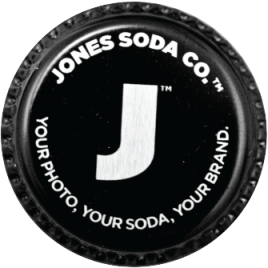
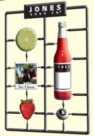

About Jones Soda

Created in Vancouver, BC in 1995 from the vision of Jones Soda founder, Peter van Stolk, and photographer/designer Victor John Penner
Jones was launched with the idea of incorporating random photographs onto their bottles using shots taken by Penner.

But when consumers began submitting their own photos, they quickly realized that user sourced participation made the brand even more special. It wasn't the Jones brand anymore. It was the fans brand!
Don't forget about their caps! Fans love the quotes they find under Jones Soda caps, which offer pearls of wisdom, advice, or simple daily pick me ups.
Collected and shared through social media, Jones Soda caps have become nearly as synonymous with their brand as the photos, and are part of what makes them who they are.